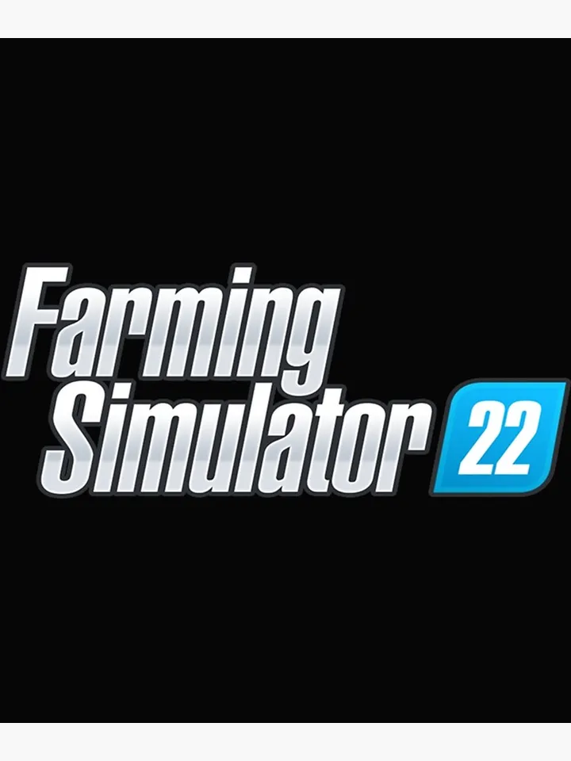

All about my farms in Farming simulater 22.
I have 3 maps that I have farms in. checkout farm 2 because thats where I tested some stuff. checkout my first farm that was one of my first ever farm, if I'm right it was my third farm I ever made. If you go checkout my third farm that is where I have made most of my money in any other of my maps!